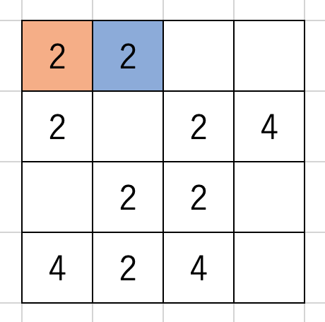

Stage 4 盤面を動かす
4-3 場合わけを統合したメソッド
4-2 では上下左右全ての方向について場合わけを行いました。結果、あまりにもコードに同じ箇所が出てきてしまいましたので、これを全て一括で表そうと思います。
ここがこのプログラミング一番の難所です。抽象度が一気にバクあがりしますので、一つ一つ丁寧に読んでいってください。
~~~~~~~~~~~~~~~
それでは board.py ファイルの Board クラス move メソッドをご用意ください。
def move(self, direction: list, *, logger=None):
logger = logger or self.logger
ever_moved = False
start = [0, self.size - 1] # UP&LEFT: 0, DOWN&RIGHT: size - 1
step = [1, -1] # UP&LEFT: 1, DOWN&RIGHT: -1
stop = [self.size, -1] # UP&LEFT: size, DOWN&RIGHT: -1
switch = (direction in [DOWN, RIGHT]) # UP&LEFT: False, DOWN&RIGHT: True
# cf. move.py and https://Saito-Saito-Saito.github.io/2048/stage4
root = [0, 0]
for root[COL] in range(start[switch], stop[switch], step[switch]):
for root[ROW] in range(start[switch], stop[switch], step[switch]):
focused = [root[ROW] - direction[ROW], root[COL] - direction[COL]]
while self.isInBoard(focused[ROW]) and self.isInBoard(focused[COL]):
# in case root == EMPTY
if self.board[root[ROW]][root[COL]] == EMPTY != self.board[focused[ROW]][focused[COL]]:
logger.info('{}, {} <- {}'.format(root[ROW], root[COL], self.board[focused[ROW]][focused[COL]]))
self.board[root[ROW]][root[COL]] = self.board[focused[ROW]][focused[COL]]
self.board[focused[ROW]][focused[COL]] = EMPTY
ever_moved = True
# in case root == focused != EMPTY
elif self.board[root[ROW]][root[COL]] == self.board[focused[ROW]][focused[COL]] != EMPTY:
logger.info('{}, {} <- {}'.format(root[ROW], root[COL], self.board[focused[ROW]][focused[COL]]))
self.board[root[ROW]][root[COL]] *= 2
self.board[focused[ROW]][focused[COL]] = EMPTY
ever_moved = True
break
# in case EMPTY != root != focuseed != EMPTY
elif self.board[focused[ROW]][focused[COL]] != EMPTY:
break
# either is zero
focused[ROW] -= direction[ROW]
focused[COL] -= direction[COL]
if ever_moved == True:
return SUCCEEDED
else:
# if no number was moved, it is game over
logger.debug('ever_moved == False')
return FAILED

なげぇ...けどこれでもまとまった方か
4-2 のコードのほぼ 1/4 に短縮されています。
~~~~~~~~~~~~~~~
引数やロガー、ever_moved の設定は 4-2 で行ったものと同じです。
def move(self, direction: list, *, logger=None):
logger = logger or self.logger
ever_moved = False
さて、4-2 で見ましたが、上下左右の 4 方向で異なるのは root と focused の動きの違いだけです。それ以外は全てコピペでしたよね。ですから我々が本腰を入れて改良しなければいけないのは、for ループの変数設定部分と while ループの focused を動かす部分です。
各方向での動きはこうなります。
| direction | root | focused |
|---|---|---|
| UP | row が増える方向 | row が増える方向 |
| DOWN | row が減る方向 | row が減る方向 |
| LEFT | column が増える方向 | column が増える方向 |
| RIGHT | column が減る方向 | column が減る方向 |
UP と DOWN について column はどう動かしても問題ないですし、LEFT と RIGHT についても row はどのように動かしても構いません。
そして row と column どちらの for ループを内側にしても大丈夫です。
ホントにぃ〜？
やってみましょうか。
この盤面を左に動かしますよ。

確かに root の row と column の順番関係なさそやな
ということで、root を操る for 文は row と column どっちを内側にするかはテキトーに決めておきます。
~~~~~~~~~~~~~~~
さて、コードに入る前に root の row と column をどんな範囲に設定するか決めておかなくてはなりません。4-2 では range の中身をこうしていました。
| 値が増える | 値が減る |
| UP の row LEFT の column | DOWN の row RIGHT の column |
| range(self.size) | range(self.size - 1, -1, -1) |
さて、増える場合の range(self.size) って、要は range(0, self.size, +1) を略した形じゃないですか。そこで UP/LEFT と DOWN/RIGHT で range の中身をスイッチのように切り替える、そんな風にしたいと考えています。
range(start, stop, step) という形なので、
logger = logger or self.logger
ever_moved = False
start = [0, self.size - 1] # UP&LEFT: 0, DOWN&RIGHT: size - 1
step = [1, -1] # UP&LEFT: 1, DOWN&RIGHT: -1
stop = [self.size, -1] # UP&LEFT: size, DOWN&RIGHT: -1
switch = (direction in [DOWN, RIGHT]) # UP&LEFT: False, DOWN&RIGHT: True
としておいて、UP/LEFT なら前を、DOWN/RIGHT のときは後ろを使うようにします。
そのスイッチの役割になっているのが名実ともに switch ですね。
start = [0, self.size - 1] # UP&LEFT: 0, DOWN&RIGHT: size - 1
step = [1, -1] # UP&LEFT: 1, DOWN&RIGHT: -1
stop = [self.size, -1] # UP&LEFT: size, DOWN&RIGHT: -1
switch = (direction in [DOWN, RIGHT]) # UP&LEFT: False, DOWN&RIGHT: True
switch は bool 型ですが、bool 型は True が 1, False が 0 に対応しますので、switch をそのままリストのインデックスに入れてもらって大丈夫です。結局、
for root[...] in range(start[switch], stop[switch], step[switch]):
という使い方をします。実際にコードを見てみましょう。
# cf. move.py and https://Saito-Saito-Saito.github.io/2048/stage4
root = [0, 0]
for root[COL] in range(start[switch], stop[switch], step[switch]):
for root[ROW] in range(start[switch], stop[switch], step[switch]):
focused = [root[ROW] - direction[ROW], root[COL] - direction[COL]]
...
root = [0, 0] としているのはリストとして root を宣言するためでした。
~~~~~~~~~~~~~~~
さて、focused を操りましょう。ただ、ここでは direction がそれぞれどんな値だったかしっかり思い出してもらわなければいけません。2-2 で定義した通り、
| direction | value |
|---|---|
| UP | [-1, 0] |
| DOWN | [+1, 0] |
| LEFT | [0, -1] |
| RIGHT | [0, +1] |
ですね。これを使ってまずは focused の位置取りをします。
具体的な事例で考えてみましょう。direction == UP のときは focused は root のすぐ
下
でしたよね。row を下げるときは row の値に 1 を加えるんでした。DOWN のときは root のすぐ上で 1 を引く、LEFT なら root の右で column に 1 を足す、RIGHT なら root の左で 1 を引く。
つまり focused は root からみて direction とは反対むきに 1 マス進んだところにあるんです。direcrion の向きに進みたいときは [row + direction[ROW], col + direction[COL]] としましたから、逆向きに進むときは [row - direction[ROW], col - direction[COL]] ですね。
for root[COL] in range(start[switch], stop[switch], step[switch]):
for root[ROW] in range(start[switch], stop[switch], step[switch]):
focused = [root[ROW] - direction[ROW], root[COL] - direction[COL]]
while self.isInBoard(focused[ROW]) and self.isInBoard(focused[COL]):
while では isInBoard を row にも column にも使って focused が盤面の外に出ていないか検証します。かたっぽでも出てたらループを抜けないとですよ。
~~~~~~~~~~~~~~~
ここから先の if による条件分岐は 5-2 と全く変わりません。全てコピペで結構です。
# in case root == EMPTY
if self.board[root[ROW]][root[COL]] == EMPTY != self.board[focused[ROW]][focused[COL]]:
logger.info('{}, {} <- {}'.format(root[ROW], root[COL], self.board[focused[ROW]][focused[COL]]))
self.board[root[ROW]][root[COL]] = self.board[focused[ROW]][focused[COL]]
self.board[focused[ROW]][focused[COL]] = EMPTY
ever_moved = True
# in case root == focused != EMPTY
elif self.board[root[ROW]][root[COL]] == self.board[focused[ROW]][focused[COL]] != EMPTY:
logger.info('{}, {} <- {}'.format(root[ROW], root[COL], self.board[focused[ROW]][focused[COL]]))
self.board[root[ROW]][root[COL]] *= 2
self.board[focused[ROW]][focused[COL]] = EMPTY
ever_moved = True
break
# in case EMPTY != root != focuseed != EMPTY
elif self.board[focused[ROW]][focused[COL]] != EMPTY:
break
最後に focused を動かします。これも UP の場合は root を下に、DOWN の場合は root を上に ... とするわけですから、direction とは逆向きに進めなければいけませんよね。したがって focused[ROW], focused[COL] それぞれから direction[ROW], direction[COL] を
引きます。
# either is zero
focused[ROW] -= direction[ROW]
focused[COL] -= direction[COL]
大丈夫ですよね？さっきと同じ仕組みですよ。わからなくなったら必ず戻って確認すること。
row と column 両方変化させんの？
UP/DOWN/LEFT/RIGHT いずれにしても direction[ROW] と direction[COL] のどちらかは 0 ですから、片方しか変化しません。
~~~~~~~~~~~~~~~
最後に、リターンするものは 5-2 と全く同じです。ever_moved が True つまり数字が一つでも動いていれば「成功」SUCCEEDED を、そうでなければ「失敗」FAILED をリターンです。
if ever_moved == True:
return SUCCEEDED
else:
# if no number was moved, it is game over
logger.debug('ever_moved == False')
return FAILED
失敗したときはログでその理由を教えてあげるのがいいでしょう。